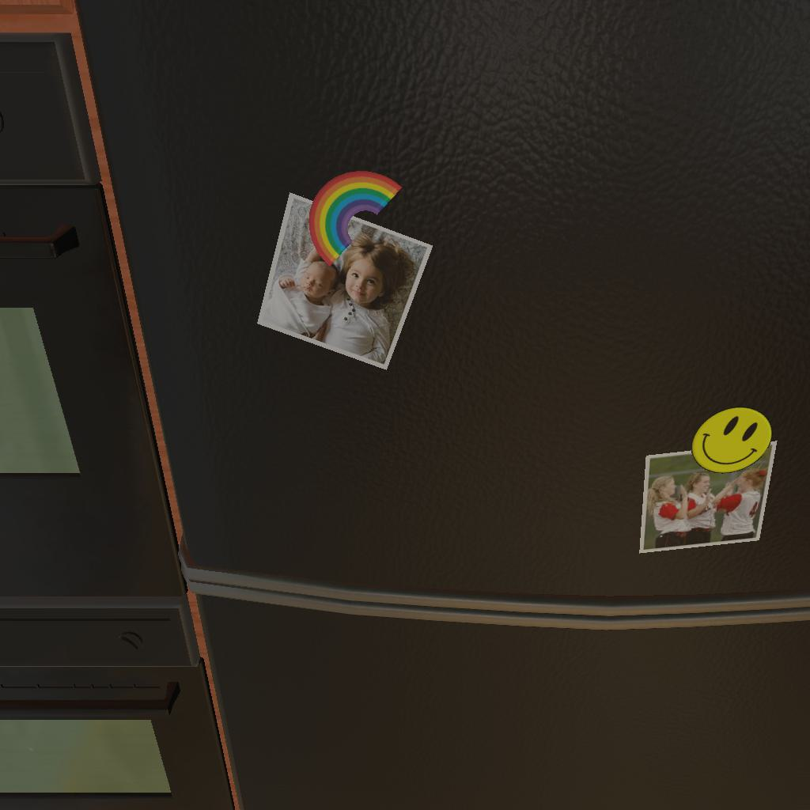
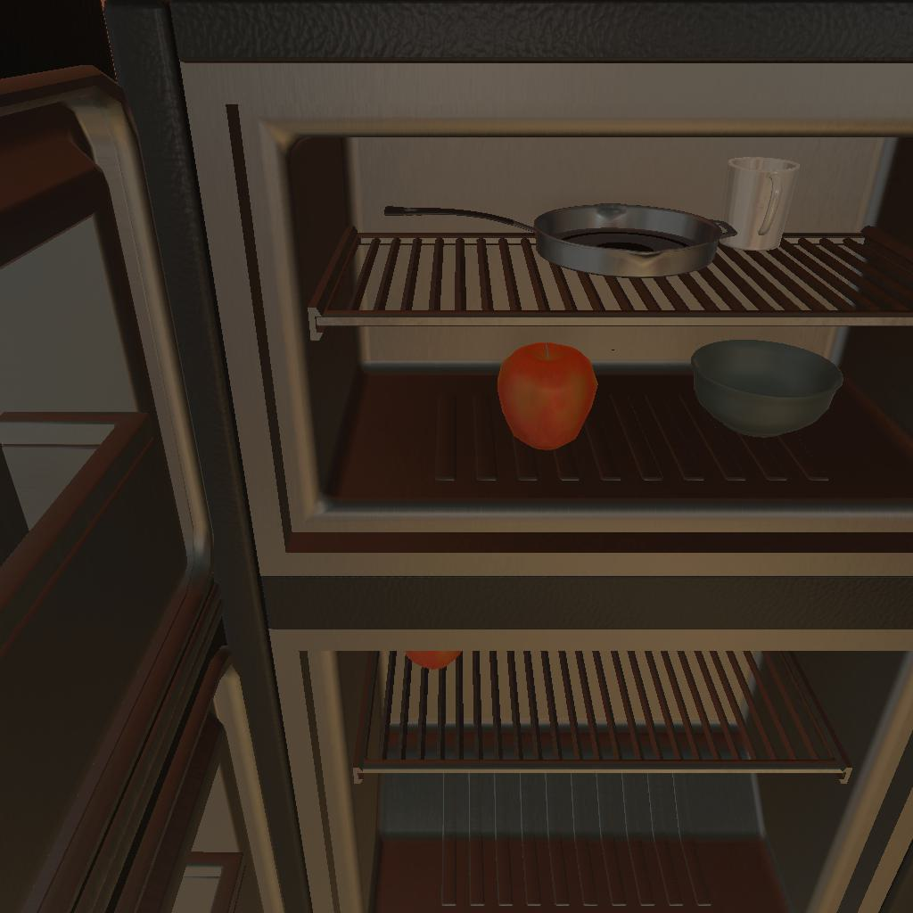

---------------------------------------------------------task: 19---------------------------------------------------------
--------------------------------------------------------------------------------------------------------------------------------------------------------------------
--------------------------------------------------------------------------------------------------------------------------------------------------------------------
Step:--------------------------------------------------------------------------15-------------------------------------------------------------------------------
----------------------------------------
VLM Prompt:
Image1:
Image2:
Image3:
**Instruction**
1. Analyze the provided images to identify all visible household objects and compare the difference between images (e.h. whether the object is opened or not and taken on hand or not), focusing on those relevant to the task description "put a cool tomato in microwave."
2. Use the analysis of images and the task hint "The agent must find an object of the desired type, pick it up, go to a fridge, cool the object with the fridge, then find the correct location to place it, and put it down there. The agent does not need to use the fridge button or open the fridge to cool the object, and the agent just needs to do action that is "cool the object with the fridge"." to answer the question: what is the most reasonable action in the choices for the task description "put a cool tomato in microwave"?
3. Decide and write the answer using the template: The answer is: (i): , where i is the real number. If there is no desired object in images, search every place based on **Initial Observation** to find the object. And if no one is exactly correct, choose a similar answer.
**Initial Observation**
You are in the middle of a room. Looking quickly around you, you can see cabinet (1-15), fridge (1), countertop (1-4), drawer (1-4), microwave (1), toaster (1), coffeemachine (1), garbagecan (1), sink (1), stoveburner (1-3), sinkbasin (1)
**Answer Choices**
(1): go to cabinet 1
(2): go to cabinet 2
(3): go to cabinet 3
(4): go to countertop 1
(5): go to cabinet 4
(6): go to cabinet 5
(7): go to cabinet 6
(8): go to cabinet 7
(9): go to drawer 1
(10): go to drawer 2
(11): go to cabinet 8
(12): go to drawer 3
(13): go to cabinet 9
(14): go to cabinet 10
(15): go to drawer 4
(16): go to microwave 1
(17): go to cabinet 11
(18): go to toaster 1
(19): go to cabinet 12
(20): go to cabinet 13
(21): go to cabinet 14
(22): go to cabinet 15
(23): go to countertop 2
(24): go to coffeemachine 1
(25): go to garbagecan 1
(26): go to countertop 3
(27): go to countertop 4
(28): go to sink 1
(29): go to stoveburner 1
(30): go to stoveburner 2
(31): go to stoveburner 3
(32): go to sinkbasin 1
(33): close fridge 1
(34): take pan 1 from fridge 1
(35): take bowl 1 from fridge 1
(36): take apple 1 from fridge 1
(37): take mug 2 from fridge 1
(38): take apple 2 from fridge 1
(39): examine fridge 1
**Answer**
Let's think step by step by following the instructions.
----------------------------------------
----------------------------------------
Original Response:
**Analysis of Images:**
- Image 1 presents a microwave with a mug and a plate inside, but no tomato is visible. The microwave is off.
- Image 2 shows the fridge with two photos attached to it, with no clear indication of its contents.
- Image 3 displays the inside of the fridge with a pan, a mug, a bowl, and two apples. A tomato is visible on the middle shelf of the fridge.
**Comparison:**
- The fridge in Image 3 is open, whereas Image 2 shows it closed from the outside.
- The tomato, which is relevant to the task, is found inside the fridge in Image 3.
**Task Analysis:**
Based on the task description "put a cool tomato in microwave" and the hint provided, the agent must find a tomato, which is seen in the fridge (Image 3), and it doesn't need to perform any actions to cool the tomato as it is already cool from being in the fridge.
**Decision:**
The most reasonable action from the choices provided, given that the tomato is already in the fridge and is assumed to be cool, would be to take the tomato from the fridge and then proceed to the microwave to complete the task.
The answer is: (36): take apple 1 from fridge 1
However, since the object we need to interact with is a tomato and not an apple, and there is no specific action listed for taking a tomato from the fridge, we must choose the action that most closely resembles the required next step of the task.
The answer is: (39): examine fridge 1
This action would allow the agent to interact with the fridge, where the tomato is located, and is the closest to the action of taking the tomato from the fridge to put it in the microwave.
----------------------------------------
----------------------------------------
>>> Refine Original VLM Response and Get Pure Action: take apple 1 from fridge 1
However, since the object we need to interact with is a tomato and not an apple, and there is no specific action listed for taking a tomato from the fridge, we must choose the action that most closely resembles the required next step of the task
----------------------------------------
-----------------------------------------------------------------
Running time: 13.665357828140259 seconds
Total Money: 11.86401
-----------------------------------------------------------------
-----------------------------------------------------------------
Text Observation:You pick up the apple 1 from the the task.
-----------------------------------------------------------------
UNSUCCEED